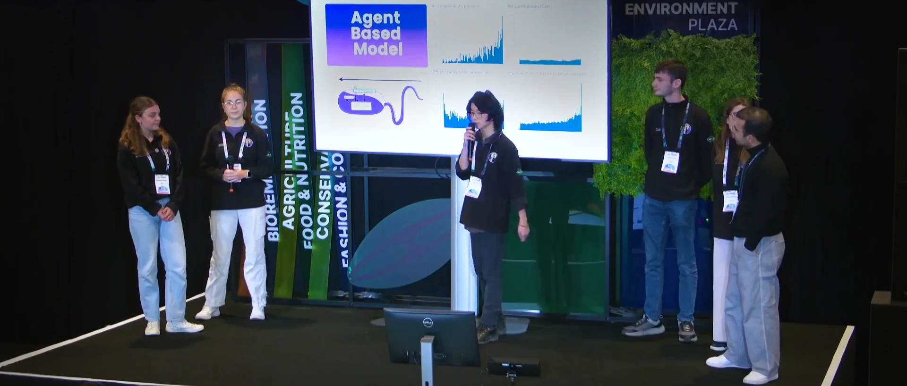

From February to October 2024, I competed in the international Genetically Engineered Machines (iGEM) competition—where competitors developed engineered biological solutions for a variety of problem spaces.
I was a member of the 2024 University of Warwick team, BEACON, working together to engineer bacteria with the abilities to scavenge for rare earth metals, then to transport them to a singular point for collection to be recycled. We were one of 210 teams1 to be awarded a gold medal at the Paris Jamboree.
This was an incredible experience, and one that I would recommend anyone interested in synthetic/engineering biology to undertake. To watch your team’s idea go from nothing to a working, real physical thing, whilst meeting so many other passionate, brilliant people is a rare and precious opportunity.
Project selection
The selection of team members was managed by our supervisors (Dr Fabrizio Alberti and Dr Alexander Darlington), involving an initial application stage, individual presentation, and group interview.
The task was to present an area of synthetic biology you were passionate about, and a potential synbio solution for the local area. I gave my presentation on biological computers2, and potential diagnostics for infected salmon in fish farms3. We were then randomly assigned groups and made to perform a group presentation on one of the solutions anyone had presented.
Being the double-A Aaron I am, I presented first—which honestly may have saved me. Watching everyone else’s beautifully crafted, enthusiastic and confident presentations was more than a little demoralising. I began to think it would be impossible to be chosen over the others. This was still only a few months into my first-year, straight out of sixth form, so back then my public speaking skills were …less than perfect.
So you can imagine just how ecstatic I was when I found out I had a place on the team, I just about launched through the ceiling when the e-mail came through.

Over the following weeks we then met the other team members, brainstormed, and settled on the final idea. We then considered possible methods of bacterial movement. An interesting idea was using gas vesicles (pictured above) to make the bacteria float, however in the interest of feasibility we chose not to explore such uncertain means. Instead we opted for a system of chemotaxis, a means much better characterised.
Project description
Methylobacterium extorquens (Mex) has natural uptake and sensing mechanisms for lanthanides, which we exploited to make Mex an ideal scavenger.

The project is described in more depth on our website4, including our design process, results, and protocols.
Modelling / Software
My primary role was as part of the dry lab team, developing computer-aided design tools for simulating our bacterial systems to inform design decisions and future directions. This was something I enjoyed a great deal. Working with the wet lab team to define model development and parameters was oddly rewarding.
Our dry lab team was further split into 3, each to manage an independent task (but all collaborating on each): the gene regulatory network model (ODEs, Laiba Wahab); the population model (PDEs, Francesco Papini); and the agent-based model (OOP, me). We document the models here.
At the start of iGEM I was woefully incompetent in mathematical modelling, and knew next to nothing about agent-based modelling—I could barely tell you what a differential equation was, let alone use them to model anything.
But as we became more familiar with the biological side of things (via workshops on molecular biology, and absorbing terminology through talking to the biologists) it became easier and easier to reason about our models. And gradually the models we had made began to make sense without needing to scrutinise them for half an hour just to comprehend the mathematical notation. By the end of the project, I even began to identify a number of areas for further improvement, but it was too late by then to implement them. However, for a first foray into biological systems modelling, for a group of 3 first-years, I would say it was quite the success.
I also towards the end of the project wrote a script in Julia to parse genomic data for Mex and produce a codon frequency usage table, available here. I don’t believe we actually used it, but it was something requested by one of the biologists. It would theoretically be useful for optimisation strategies in future designs.
Jamboree

In October we (all but one member who was sadly unable to come) travelled to Paris to attend the Jamboree. We met up with the other UK teams, and even made friends in unexpected places—on the tram, for example, we met the BUAPMX (Puebla, Mexico) team and made a friend in José who would meet up with us throughout the whole Jamboree. By the end we were sitting by the Seine together, and it was almost too hard to say goodbye.
There was a real sort of spirit in the event too, with at least 2 people dressed as cows (cough Exeter cough), a walking corn cob, a giant mosquito… and an astonishingly large number of memes being generated live as the awards were being announced (courtesy of iGEM Düsseldorf). And it was really sweet too, the support everyone gave to the high school teams as they were presenting in the awards ceremony5. Even the mess of the tech organisation and €10 sandwiches had a sort of charm…
Presentation
 Whilst it was great to walk around the venue talking to other teams (I found McGill’s project particularly interesting, with their use of DNA computing), the Jamboree was also my first real experience of presenting to a live public audience.
It’s not immediately apparent but I’m actually a lot better than in the interview presentation, and I’m really quite proud of how I did here. A teammate even told me I seemed calm and relaxed afterwards, which was a surprise but rather high praise I felt.
Conclusion
 Figure: UK teams requisitioning booth signs. Meme by iGEM Düsseldorf.
Figure: UK teams requisitioning booth signs. Meme by iGEM Düsseldorf.
iGEM has, in my opinion been one of the most enjoyable experiences I’ve ever had. I’ve met so many incredible people, been able to work on cutting edge research, and learned such a lot. Warwick will sadly not be participating in 2025 6, so this would likely have been the only time I would ever have practically been able to participate. So I’m glad that I did this when I did, and I wouldn’t have traded this experience for anything. Many thanks to my most excellent teammates and supervisors for making everything possible. For anyone wanting to learn more or shout at me, feel free to reach out (contact).
-
I mention this number not to undercut our accomplishments, but more as a testament to the enthusiasm and incredible skill that each and every team brought to the competition. ↩︎
-
My Computer Science / Engineering background shining through there. ↩︎
-
Including a joke about the ‘price of fish’ as a transition between the two hahahaha… I’m so sorry. I still think it was funny though. ↩︎
-
Website graphics and code designed and written by me, content written by all team members. ↩︎
-
The applause and cheering might have made things worse, but it’s the thought that counts. ↩︎
-
Administrivia. ↩︎